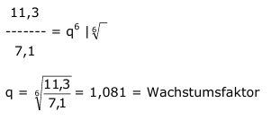

Aufgabe 249 In einem Labor züchtet man Bakterien. Zu Beginn sind 7,1 Millionen vorhanden. Nach 4 Stunden sind es 9,7 Mio, nach 6 Stunden 11,3 Mio. Wie viel Bakterien sind es nach 2,5 Stunden? Wie viele sind es 1 Stunde vor Beginn der Beobachtung? Exponentielle Zunahme, kein gleichmäßiger Zuwachs. B6 = B0 * q6 11,3 Mio = 7,1 Mio * q6 | :7,1  B2,5= B0 * q2,5 B2,5 = 7,1 Mio * 1,0812,5 = 8,63 Mio B-1 = B0 * q-1 B-1 = 7,1 Mio * 1,081-1 = 6,57 Mio